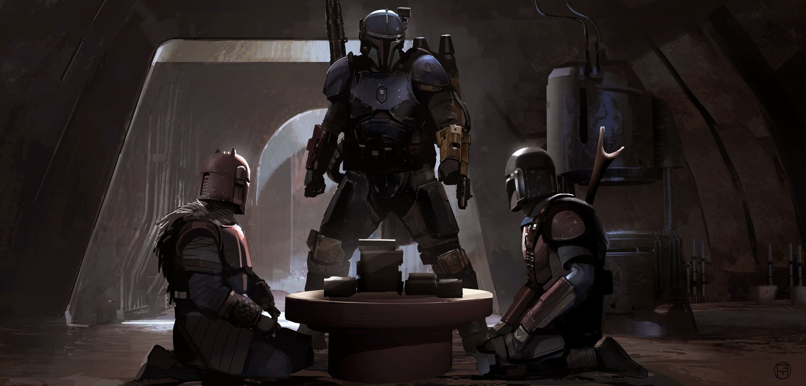
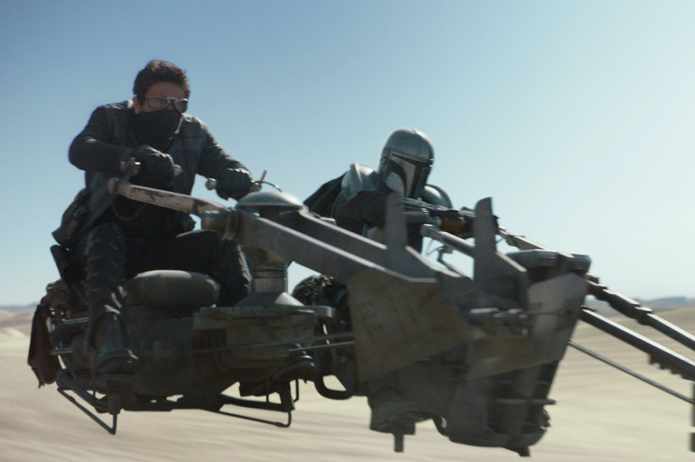
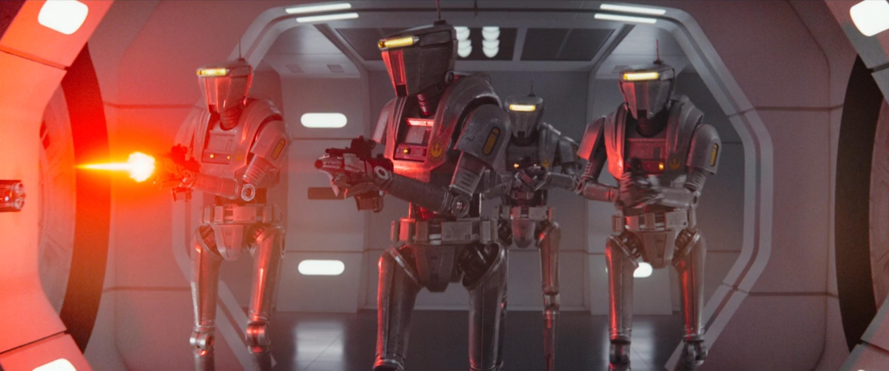
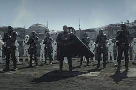

Saison 1
Episode 1 "Le Mandalorien"

Cinq années après la chute de l'Empire Galactique, un chasseur de primes mandalorien achève sa dernière mission en remettant sa proie à Greef Karga sur la planète Nevarro. Il se voit ensuite confier une mission par un mystérieux client lié aux anciennes affiliations impériales. Sa tâche consiste à localiser et capturer une cible anonyme de cinquante ans. Bien que le client montre peu d'intérêt pour le bien-être de la cible, le Dr Pershing, son associé, insiste pour que la capture se fasse vivante.
Le Mandalorien reçoit un acompte sous la forme d'une barre d'acier Beskar, une ressource sacrée pour son peuple. Il amène cette récompense dans une enclave mandalorienne secrète, où une Armurière la transforme en une nouvelle épaulette. En se rendant sur la planète Alvara-7, le dernier emplacement signalé de la cible, le Mandalorien bénéficie de l'aide de Kuiil, un paysan fatigué des troubles causés par les chasseurs de primes. Kuiil le guide vers la localisation de la cible, ne cherchant que la paix.
En pénétrant dans le camp éloigné et solidement défendu, le Mandalorien fait à contrecœur équipe avec le droïde chasseur de primes IG-11 pour nettoyer le camp et découvrir l'objet de la mission : un petit enfant de l'espèce de Yoda. Lorsque IG-11 tente de mettre fin à la vie du nourrisson conformément à ses ordres, le Mandalorien intervient, détruisant la tête du droïde et sauvant ainsi l'Enfant, qu'il décide de protéger et d'emmener avec lui.
Episode 2 "L'Enfant"

De retour sur son vaisseau avec l'Enfant, le Mandalorien affronte et élimine les chasseurs de primes rivaux embusqués. En retrouvant son vaisseau, il découvre qu'il a été démantelé par des Jawas en quête de pièces, et il les confronte violemment. Cependant, lorsqu'il attaque leur char des sables, les Jawas le neutralisent et le font chuter du toit. Le lendemain, Kuiil aide le Mandalorien à localiser les Jawas et à négocier le retour des composants de son navire.
Le Mandalorien accepte de récupérer l'œuf d'un mudhorn, une imposante créature ressemblant à un rhinocéros, en échange des pièces volées. Pénétrant dans la grotte du mudhorn, il est violemment repoussé par la bête en colère, subissant plusieurs attaques qui endommagent son armure. Alors que le mudhorn s'apprête à le mettre hors d'état de nuire, l'Enfant utilise la Force pour soulever la créature, permettant au Mandalorien surpris de la poignarder et de la tuer. Il récupère ensuite l'œuf du mudhorn et le ramène aux Jawas, qui le dévorent. Après l'échange, le Mandalorien et Kuiil réparent le vaisseau, lui permettant de quitter la planète en compagnie de l'Enfant.
Episode 3 "Le Péché"
{kind=link}
L'Enfant est remis au client sur Nevarro, et le Mandalorien reçoit la prime de 20 barres d'acier Beskar. D'une manière peu commune, il pose des questions sur les intentions du client concernant l'Enfant, mais on lui répond que cela va à l'encontre du Code. De retour dans l'enclave mandalorienne, il remplace son armure endommagée et améliore ses armes auprès de l'Armurière, qui forge une cuirasse complète en beskar. Acceptant un nouveau contrat de Greef Karga, le Mandalorien prépare son vaisseau pour le départ.
Cependant, avant de partir, il est soudainement envahi par des remords et décide d'attaquer la base du client. Alors qu'il élimine de nombreux stormtroopers, il sauve l'Enfant du laboratoire du Dr. Pershing où des expérimentations étaient en cours, épargnant toutefois la vie du médecin. En retournant vers son vaisseau, le Mandalorien est pris en embuscade par d'autres chasseurs de primes, accompagnés de Greef Karga, qui exigent la remise de l'Enfant. Refusant catégoriquement, une fusillade éclate. Dans une position délicate et en infériorité numérique, le Mandalorien est incapable de s'échapper, mais heureusement, d'autres Mandaloriens arrivent de l'enclave, attaquant les chasseurs de primes et lui permettant ainsi d'atteindre son vaisseau en toute sécurité avec l'Enfant.
Episode 4 "Le Sanctuaire"

En arrivant sur la planète peu peuplée de Sorgan, le Mandalorien fait la rencontre de Cara Dune, une ancienne soldate rebelle devenue mercenaire. Après une brève altercation, Dune explique qu'elle se cache après avoir pris une "retraite anticipée" et demande au Mandalorien de partir. Alors qu'il prépare son vaisseau, deux pêcheurs désespérés s'approchent, lui proposant d'embaucher ses services pour se débarrasser d'une bande de pillards klatooiniens. Acceptant le travail en échange d'un logement, le Mandalorien utilise leurs crédits pour obtenir l'aide de Dune.
Arrivés au village, ils sont accueillis par Omera, une mère veuve. Le Mandalorien partage avec elle le fait que personne ne l'a vu sans son casque depuis son enfance, lorsque sa tribu l'a accueilli comme orphelin. Bien qu'ils découvrent que les pillards disposent d'un AT-ST impérial, les villageois refusent de partir. Ainsi, le Mandalorien et Dune les entraînent à se défendre. Ils provoquent une attaque nocturne, avec Dune attirant l'AT-ST dans un piège pour que le Mandalorien puisse le détruire, forçant les autres pillards à battre en retraite.
Avec la paix rétablie, le Mandalorien envisage de laisser l'Enfant dans le village. Cependant, un chasseur de primes de la Guilde les retrouve, mais est éliminé par Dune. Réalisant que ni le village ni l'Enfant ne seraient en sécurité, le Mandalorien décide de partir avec ce dernier.
Episode 5 "Le Mercenaire"
{kind=link}
Le Mandalorien remporte un combat spatial contre un chasseur de primes et fait atterrir son vaisseau endommagé sur un quai de réparation à Mos Eisley, Tatooine, géré par Peli Motto. Cherchant du travail pour payer les réparations, il se rend dans une cantina bien connue, celle même où Luke Skywalker et Obi-Wan Kenobi ont rencontré Han Solo et Chewbacca. Là, il rencontre Toro Calican, un aspirant chasseur de primes qui poursuit la mercenaire d'élite Fennec Shand. Calican propose au Mandalorien de l'aider à capturer Shand en échange de l'argent de la prime.
Ensemble, ils capturent Shand dans le désert, mais elle détruit l'un de leurs speederbikes. Le Mandalorien part alors chercher un dewback qu'ils ont rencontré plus tôt. Pendant ce temps, Shand révèle à Calican que le Mandalorien a trahi la guilde, augmentant ainsi la prime sur sa tête. Elle propose de l'aider à capturer le Mandalorien en échange de sa libération, mais Calican choisit de l'exécuter. Il se rend ensuite au quai de réparation, prenant Motto et l'Enfant en otage. Cependant, le Mandalorien intervient, utilisant une fusée pour désorienter Calican et le tuant. Il prend l'argent de Calican pour payer les réparations à Motto et quitte Tatooine après avoir remercié la gérante. Pendant qu'il quitte le désert, une silhouette mystérieuse s'approche du corps de Shand.
Episode 6 "Le Prisonnier"
{kind=link}
Le Mandalorien fait appel à son ancien associé Ran pour trouver du travail. Ran l'accueille chaleureusement sur sa station spatiale et lui expose un contrat nécessitant l'utilisation de son vaisseau. L'équipe formée pour cette mission comprend l'ancien tireur d'élite impérial Mayfeld, le puissant Dévaronien Burg, le pilote droïde Q9-0, et la Twi'lek Xi'an. Leur objectif est de sauver le frère de Xi'an, Qin, actuellement détenu par la Nouvelle République.
Pendant l'infiltration du vaisseau-prison, l'équipe affronte des droïdes de sécurité et atteint la salle de contrôle. Un soldat de la Nouvelle République déclenche une balise de sécurité avant d'être éliminé par Xi'an. Toutefois, l'équipage trahit le Mandalorien, le capture et le enferme. Malgré cela, le Mandalorien réussit à s'évader, affrontant chaque membre de l'équipage avant de capturer Qin. Q9-0 localise l'Enfant grâce à une transmission de Greef Karga, mais le Mandalorien abat le droïde avant qu'il ne puisse nuire à l'Enfant. Le Mandalorien livre Qin à Ran et reçoit son paiement.
Cependant, Ran tente de le trahir en envoyant un chasseur pour l'éliminer. À sa grande surprise, le Mandalorien avait caché une balise de la Nouvelle République sur Qin, attirant ainsi l'attention de trois chasseurs X-wing républicains qui détruisent rapidement la station de Ran. Dans la conclusion, Mayfeld, Burg et Xi'an sont enfermés dans une cellule de prison, épargnés par le Mandalorien.
Episode 7 "La Confrontation"

Le Mandalorien reçoit un message urgent de Greef Karga, indiquant que la ville est sous l'emprise des troupes impériales dirigées par le Client. Karga suggère un plan audacieux : utiliser l'Enfant comme appât pour attirer le Client dans un piège, éliminant ainsi la menace impériale et libérant la ville. En échange de cette mission périlleuse, Karga promet de régler les différends avec la Guilde, offrant au Mandalorien et à l'Enfant la possibilité de vivre en paix.
Prudent face à la possibilité d'un piège, le Mandalorien recrute l'aide de Cara Dune et Kuiil. Kuiil reconstruit et reprogramme IG-11 pour les accompagner. Lorsqu'ils rencontrent Karga et ses associés, une attaque nocturne de Mynocks les prend par surprise. Karga est grièvement blessé, mais l'Enfant utilise la Force pour guérir sa blessure. Cependant, les intentions de Karga prennent un tournant sombre. Il tire sur ses associés, révélant son plan initial visant à éliminer le Mandalorien et à livrer l'Enfant au Client.
Karga prévoit de faire passer Dune pour la capture du Mandalorien, tandis que Kuiil retourne au vaisseau avec l'Enfant. Pendant ce temps, le Client accueille le groupe, mais il reçoit un appel de son mystérieux patron. Les troupes du patron attaquent le bâtiment, éliminant le Client et sa garde. Le patron, accompagné d'un bataillon complet de Stormtroopers et de Death Troopers, annonce fièrement que l'Enfant sera bientôt en sa possession. Dans le désert, deux Scout Troopers pourchassent et tuent Kuiil avant de capturer l'Enfant.
Episode 8 "Rédemption"
{kind=link}
Alors que les deux Scout Troopers retournent à la ville, ils sont interceptés par IG-11. Le droïde désactive les soldats impériaux, récupère l'Enfant, et utilise un des motospeeders pour foncer en ville. Dans la ville, le chef impérial révèle son identité en tant que Moff Gideon et expose les passés des membres du petit groupe. Le Mandalorien, Din Djarin, révèle sa propre histoire : orphelin sauvé par les Mandaloriens pendant la Guerre des Clones, adoptant leur credo. Moff Gideon était autrefois agent de liaison du BSI sur Mandalore, le seul à connaître le vrai nom du Mandalorien.
L'arrivée d'IG-11 permet au groupe de gagner du temps pour s'échapper, mais Din est grièvement blessé par un tir de Moff Gideon. Alors que Greef et Dune partent avec l'Enfant dans les égouts, IG-11 soigne Din, respectant le code mandalorien en ne retirant pas son casque devant un être vivant. Rejoignant le groupe dans les égouts, ils retrouvent L'Armurière en train de fondre les armures des Mandaloriens défunts. Ayant écouté le récit de Din, elle le reconnaît comme le père de l'Enfant selon le code mandalorien. Elle lui remet un jetpack en Beskar et le désigne comme le gardien de l'Enfant jusqu'à son retour chez son peuple. L'Armurière élimine seule une escouade de stormtroopers.
Poursuivant leur fuite à travers les égouts et une rivière de lave souterraine, ils se préparent à un guet-apens impérial en surface. IG-11 se sacrifie en activant son autodestruction pour ouvrir la voie. Dans les plaines de cendres, le groupe est attaqué par Gideon à bord d'un chasseur TIE. Le Mandalorien utilise son jetpack pour atteindre le vaisseau impérial, le détruisant avec des explosifs. Gideon survit et sort du TIE avec le Sabre Noir, un sabre laser symbolique du peuple mandalorien. Din décide de partir à la recherche du peuple de l'Enfant, tandis que Greef et Dune retournent en ville. Moff Gideon brandit le Sabre Noir, laissant planer des mystères sur l'avenir.